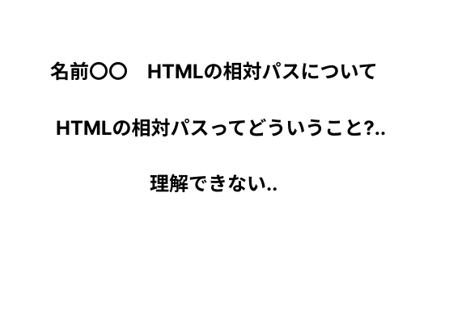
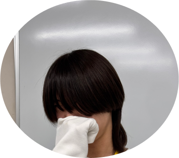
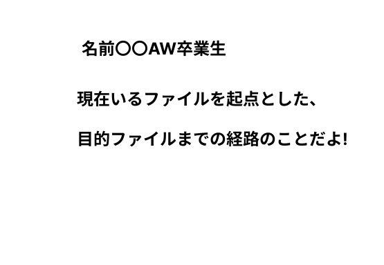

不安や悩み、卒業生
に聞きたいことは
ありませんか？
在校生の方へ
在校生の皆さん、こんにちは!突然ですが、Webデザイン科について
不安や悩み、気になることはありませんか？学生の気持ちがわかるのは、
Webデザイン科で2年間過ごした人しかわからないですよね....
そこで、Webデザイン科を卒業した人へ質問できる
『おいでよ、Web
デザイン科の質問箱へ』を開設しました！
卒業生に聞きたいことがあれば、このサイトを通して、気軽に
質問してくださいね！
卒業生の方へ
卒業生の皆さん、こんにちは!突然ですが、Webデザイン科の
在校生の質問に回答してみませんか？在校生は今、学校生活の中、
不安や悩み、質問したいことがたくさんあると思います。
学生の気持ちがわかるのはWebデザイン科で2年間過ごした人だけ!
そこで、Webデザイン科を卒業生した方に回答をしてほしいです!
お忙しい所ですが、是非在校生の悩みの解消をしてほしいです!
例えばこんな質問...


